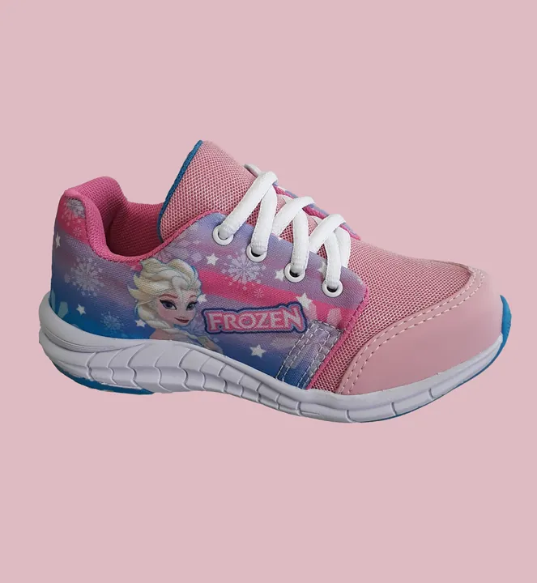
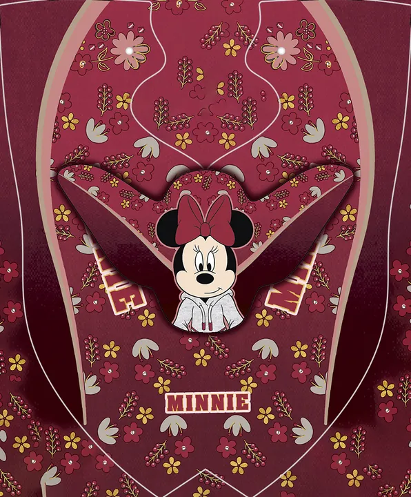
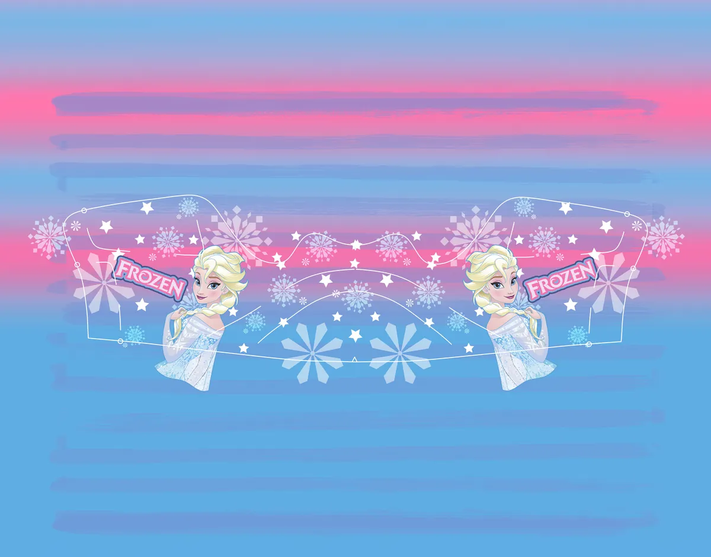

Batatinha
Os marketplaces estavam lotados dos mesmos modelos de tênis. Adaptei um modelo para sublimação sem modificar a linha de produção que já existia, e o projeto foi apresentado aos licenciados da C&A.
- Ano
- 2018
- O que fiz
- Criação, adaptação do modelo, direção de arte
- Processo
- Sublimação

A arte nas peças do modelo


Estampa corrida
